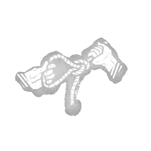

血狱钩：刽子手诡计 Scourge Hook: Hangman's Trick
所属：猪女（杀手）
| 等级 | 档位 1 | 档位 2 | 档位 3 |
|---|---|---|---|
| 数值 | 12 3 | 14 | 16 |
描述
你对钩子的巧妙改造警示你有人动手脚。游戏开始时，环境中的4个钩子变为灾祸之钩：灾祸之钩以白色高亮显示。扛起逃生者时，灾祸之钩：绞刑吏的诡计触发其主要效果：你可见12/14/16米范围内所有逃生者的气场。每当有逃生者开始破坏任意钩子时，灾祸之钩：绞刑吏的诡计触发其次要效果：在该钩子的位置触发响亮的噪音提示。"没有借口，没有推诿……没有哭泣。" ——阿曼达·杨